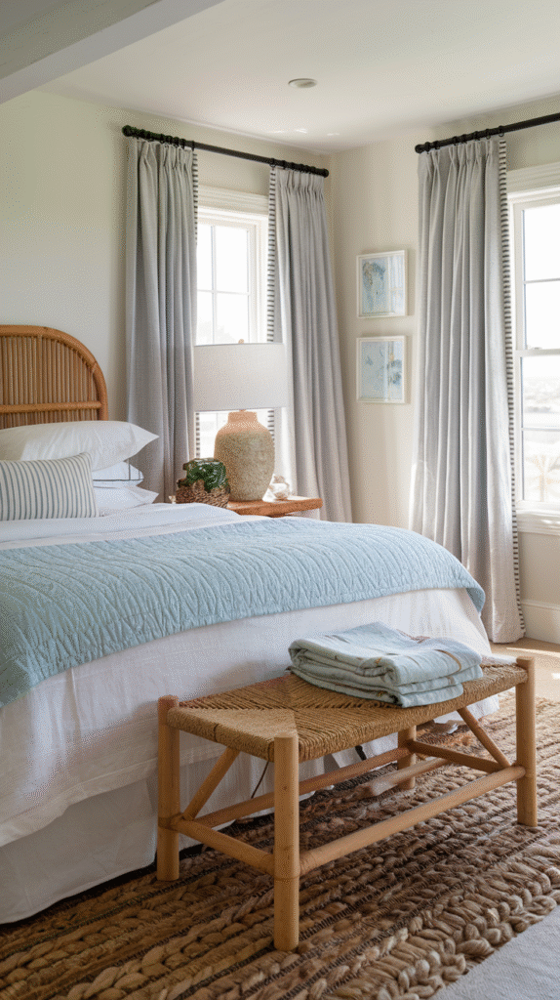
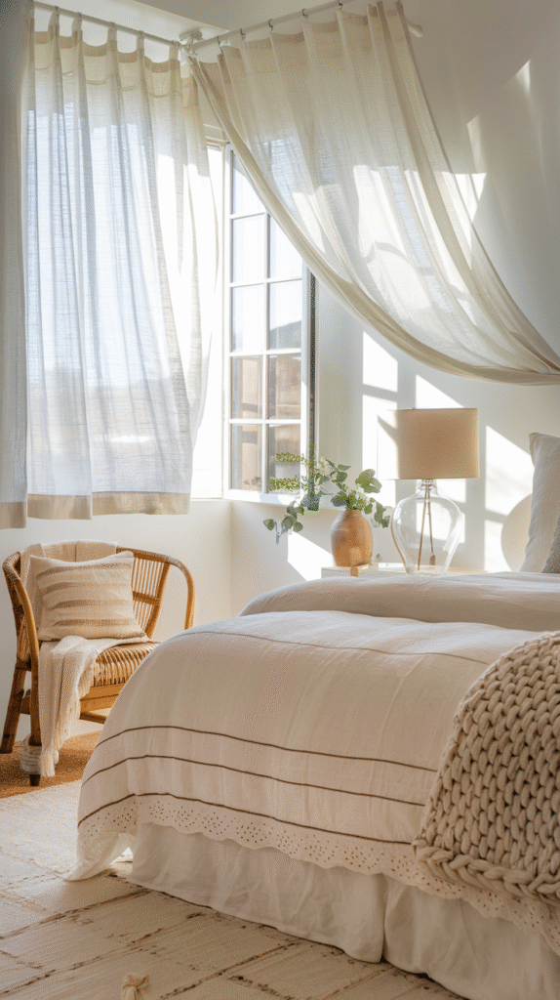
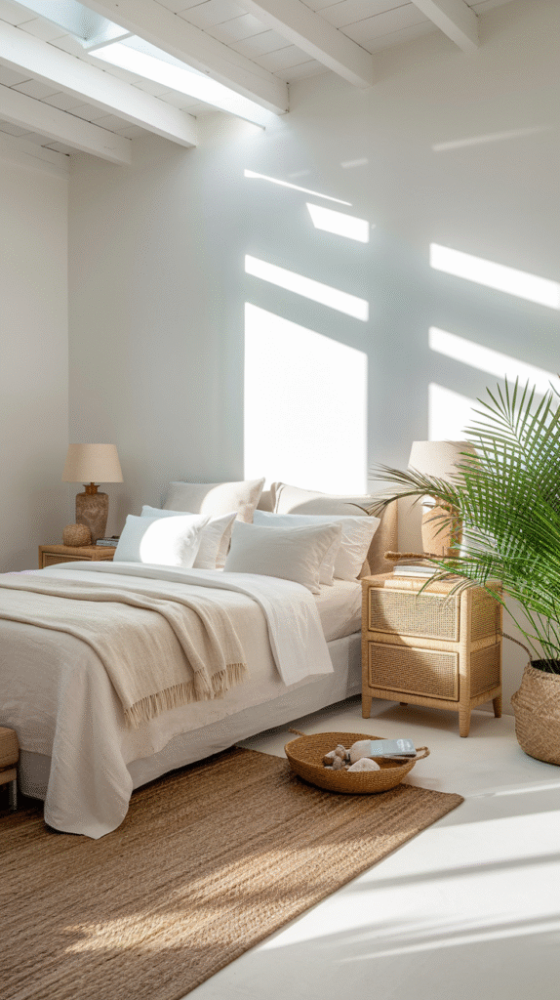
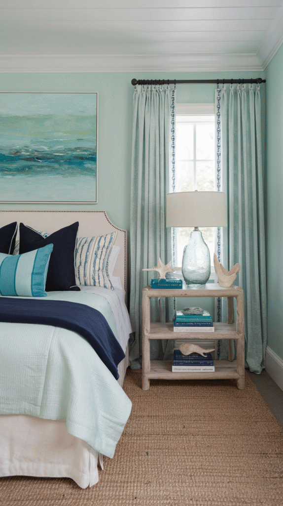
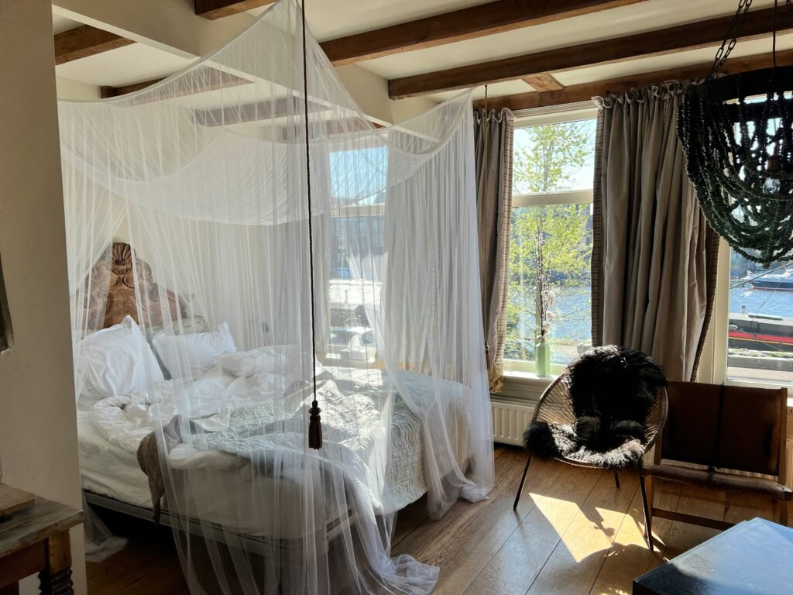
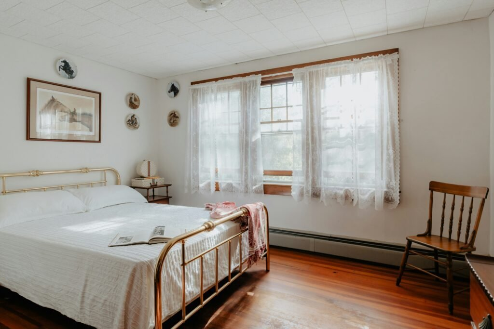
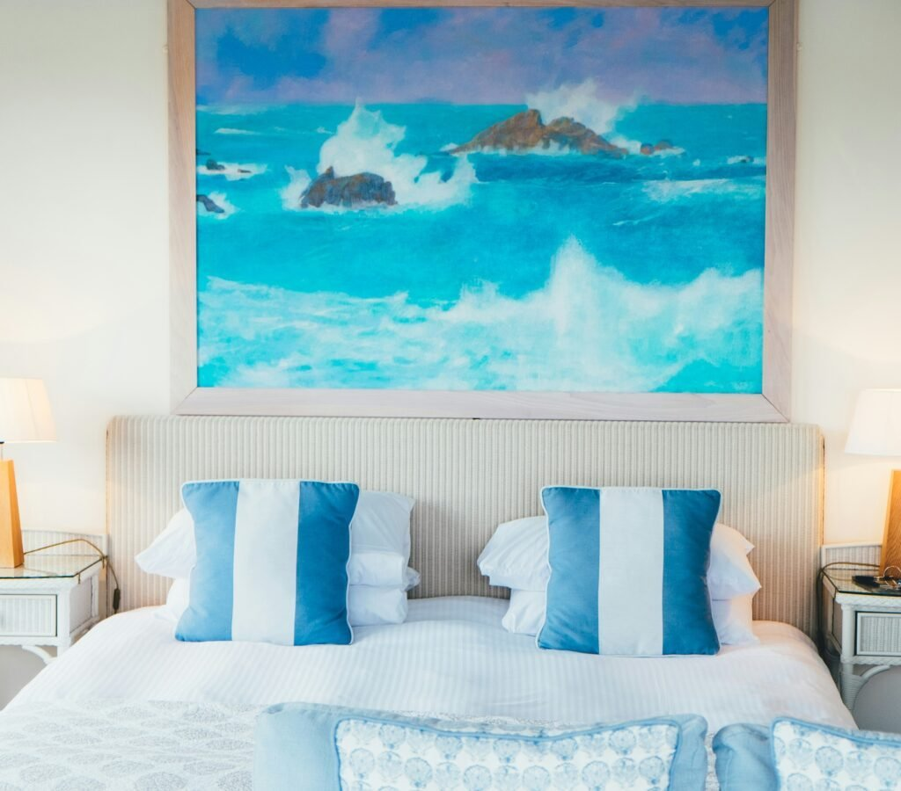
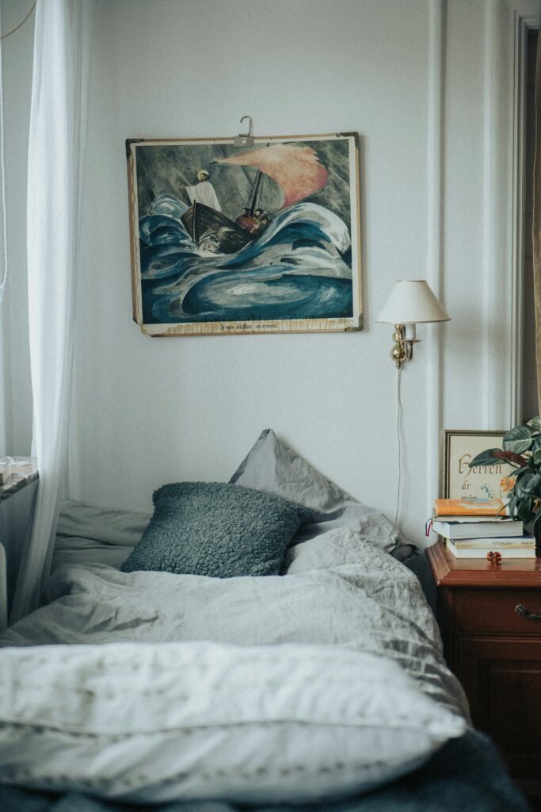
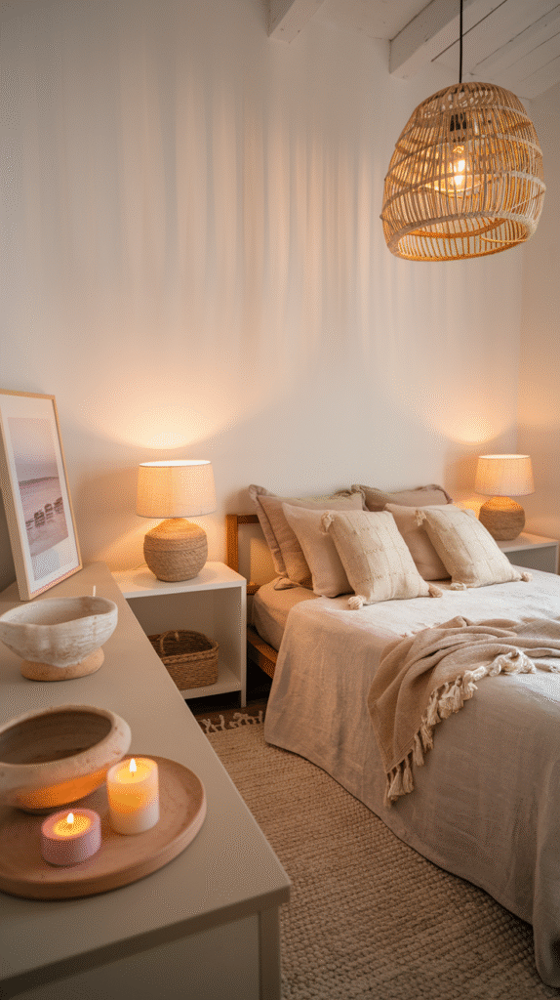
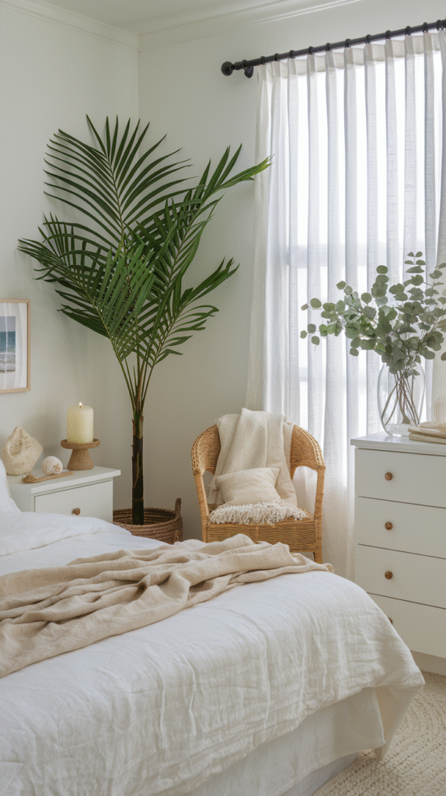

Forget the seashells.
Forget the anchor-print pillow too, honestly.
A coastal bedroom isn't about beach souvenirs scattered on a shelf.
It's a feeling. Breezy. Sun-bleached. A little undone, in the best way.
And that feeling comes down to a handful of real choices — color, material, light.
Get those few choices right and the room does the rest of the work on its own.
Here are 10 of them, minus the beach-house clichés.

1. Texture Does the Heavy Lifting
Start here, not with paint.
Linen bedding. A jute rug. A rattan headboard.
These materials carry most of the coastal feeling on their own.
They've got this relaxed, slightly imperfect quality that fits the whole vibe.
Nothing too polished. Nothing too synthetic.
Layer two or three of these together and it reads as curated, not matched.

2. Choose Fabrics That Feel Light
Sheer curtains. A lightweight linen duvet. Throws that are loosely woven, not dense.
All of it reinforces the airy feeling the whole look is chasing.
Heavy, dense fabric works against you here, even in the right color.
Good news: this is one of the cheapest swaps on the whole list.
It's a fabric choice, not a furniture one.

3. Build on Breezy White Walls
A soft, warm white is the foundation most coastal bedrooms are built on.
Skip the stark, clinical white, though.
A slightly warmer off-white reads as sun-washed instead of sterile.
Everything else on this list gets layered on top of this base.
Worth getting right before anything else.

4. Let Ocean Color In, Just Not Everywhere
Soft blue. Sandy beige. A little seafoam green.
This is the palette that pushes a room from "white bedroom" to "coastal bedroom."
But use it in small doses.
A throw pillow. One piece of art. Maybe an accent wall.
Layered onto the white base, not replacing it.
This is really where the room's personality shows up.

5. Bring in Driftwood or Weathered Wood
A driftwood mirror frame. A weathered side table. A reclaimed headboard.
This is genuine coastal character, not a stand-in for it.
That rough, sun-bleached look is hard to fake with anything new.
That's exactly why it reads as authentic.
One or two pieces is usually plenty.
This works better as an accent than as every single piece of furniture.

6. Furnish With Less, Not More
Coastal bedrooms work best with fewer pieces, not a fully furnished room.
Clean lines. Light wood or white finishes.
That keeps the room feeling open, which is the whole point.
Negative space is doing real work here.
A sparser room reads as intentional. Not unfinished.

7. Keep the Nautical Stuff Quiet
One rope-wrapped mirror. A woven rattan pendant light.
That's enough of a nautical nod without tipping into theme-park territory.
One understated detail reads as sophisticated.
Several literal ones — anchors, ship wheels, stripes on every surface — read as costume.
Restraint matters more here than almost anywhere else on this list.

8. Pick One Statement Art Piece
One large piece beats a gallery wall of small, matching coastal prints.
Think an abstract ocean-toned painting. A black-and-white beach photo. A woven wall hanging.
This keeps the room feeling curated instead of overly literal.
Scale wins here, not subject matter.
One confident piece does more than five small ones ever could.

9. Layer Your Lighting
Natural light, a warm bedside lamp, maybe a woven pendant — mix all three.
That keeps the room feeling sunlit even once the sun's down.
Sheer window treatments that actually let daylight through do more for this look than any lamp can.
Warm-toned bulbs keep the nighttime version of the room just as relaxed as the daytime one.

10. Finish With a Little Greenery
A palm. A fern. Something with loose, relaxed foliage.
This is the last layer, and it brings real life into the room.
It's also one of the easiest, most effective finishing touches on this whole list.
A natural-fiber planter keeps the material story consistent with everything else you've added.

You Don't Need a Renovation
None of these 10 ideas require tearing the room down to the studs.
Start with texture and fabric. Those two alone shift the whole feeling.
Then layer in color, a driftwood piece, and one statement moment as your budget allows.
A coastal bedroom isn't about literal beach decor.
It's about restraint, and picking the right materials.
Get those two things right, and the anchors and seashells were never going to be necessary anyway.